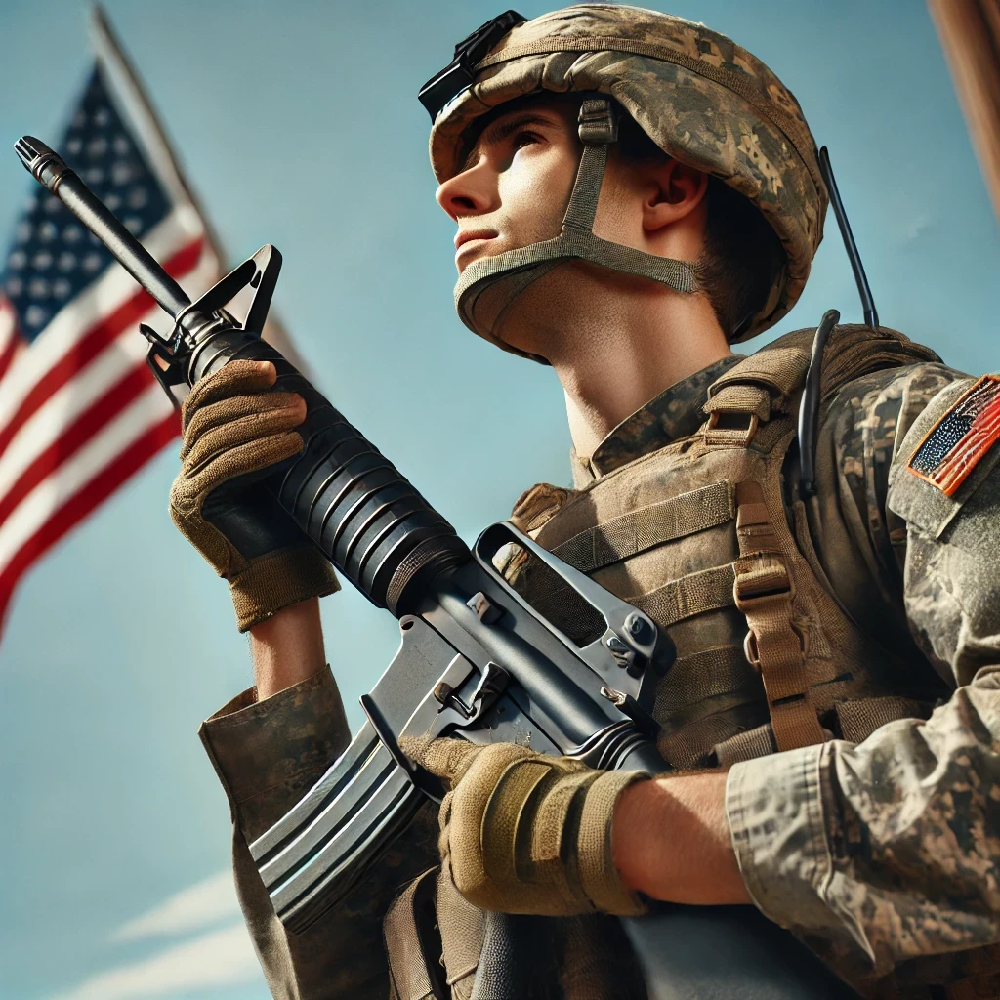

Самостійна робота 1
2 заголовок
3 заголовок
4 заголовок
5 заголовок
6 заголовок
параграф для тексту
фарматований текстпосилання на щось

- Пункт 1
- Пункт 2
- Пункт 3
- Пункт 4
- Пункт 5
Що купити
- молоко
- хліб
- булка
- масло
- машина
- Подразделения поддержки (Support Units):
Основные роли в батальоне
- Командир батальона (Battalion Commander):
- Звание: Подполковник
(Lieutenant Colonel) - Ответственность: Общее командование батальоном, принятие решений по тактике и стратегии, взаимодействие с вышестоящими командующими.
- Заместитель командира батальона (Executive Officer, XO):
- Звание: Майор (Major)
- Ответственность: Административное управление, помощь командиру батальона, координация работы штабного персонала.
- Сержант-майор батальона (Command Sergeant Major):
- Звание: Сержант-майор (Command Sergeant Major)
- Ответственность: Руководство сержантами, поддержание дисциплины и стандартов выполнения задач, советник командира по вопросам личного состава.
- Офицер по операциям (Operations Officer, S3):
- Звание: Майор или капитан (Major/Captain)
- Ответственность: Планирование и координация операций, разработка тактических планов, управление учениями и тренировками.
- Офицер по логистике (Logistics Officer, S4):
- Звание: Капитан (Captain)
- Ответственность: Управление снабжением, транспортом и материально-техническим обеспечением батальона.
- Офицер по разведке (Intelligence Officer, S2):
- Звание: Капитан или лейтенант (Captain/Lieutenant)
- Ответственность: Сбор и анализ разведывательной информации, обеспечение безопасности информации.
- Офицер по персоналу (Personnel Officer, S1):
- Звание: Капитан или лейтенант (Captain/Lieutenant)
- Ответственность: Управление кадровыми вопросами, администрирование личного состава, моральное состояние солдат.
- Офицер по гражданским делам (Civil Affairs Officer):
- Звание: Капитан или лейтенант (Captain/Lieutenant)
- Ответственность: Координация взаимодействия с гражданским населением и местными властями в зоне операций.
Несколько рот, в зависимости от типа батальона (например, пехотный, танковый).
Каждая рота выполняет свои специализированные задачи, такие как штурмовые действия или оборона.
Подразделения поддержки (Support Units):
Могут включать медиков, инженеров и артиллерийские подразделения, обеспечивающие боевую и техническую поддержку.
Дополнительные ключевые роли
Старший медицинский офицер (Senior Medical Officer): Управляет медицинской службой батальона, обеспечивает медицинскую помощь.
Офицер по связи (Communications Officer): Обеспечивает связь и координацию внутри батальона и с вышестоящими подразделениями.
Батальон действует как целостная единица, где каждая роль и подразделение дополняют друг друга, обеспечивая эффективность и боеспособность в различных условиях.
| Модель | тип | дальнобойность | точность | дополнительное снаряжение | начало експлоутации |
|---|---|---|---|---|---|
| M4 Carbine | Карабин | 500-600 метров (эффективная) | Высокая на коротких и средних дистанциях | Оптические прицелы, глушитель, подствольный гранатомет M203, лазерные целеуказатели | 1994 год |